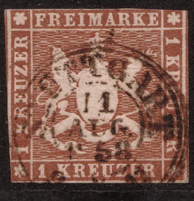
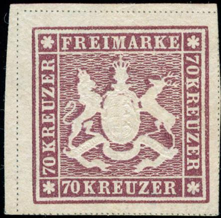
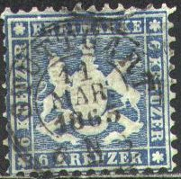
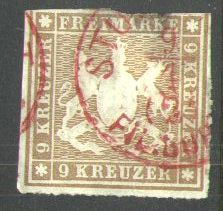

{kind=link}

{kind=link}

Return To Catalogue - Wurttemberg Forgeries of the 1857-1865 issues, part 1 - Wurttemberg Forgeries of the 1857-1865 issues, part 2 - Wurttemberg Fournier Forgeries - Wurttemberg 1851 issue - Issues of 1866-1900 - Other German States - Germany
Note: on my website many of the
pictures can not be seen! They are of course present in the
catalogue;
contact me if you want to purchase it.
Imperforate (1857)
1 Kreuzer brown 3 Kreuzer orange 6 Kreuzer green 9 Kreuzer red 18 Kreuzer blue 70 Kreuzer lilac (1873)
The first stamps issued (in the value 1 k to 18 k) have orange silk threads and were printed quite close together (0.75 mm). In 1859 the stamps (1 k to 18 k) were re-issued without silk threads, the distance between two stamps is now larger (1 to 1.25 mm). The 70 k value was only issued in 1873, it has black separating lines around the stamp (first only one line, later two lines); it was printed in blocks of 6 stamps.
Stamps of the first issue with silk threads (clearly visible as
the horizontal line in the 6 k stamp)
Two stamps of the second issue without silk threads; printed
further apart
Two 70 k stamps with one separating line
Value of the stamps |
|||
vc = very common c = common * = not so common ** = uncommon |
*** = very uncommon R = rare RR = very rare RRR = extremely rare |
||
| Value | Unused | Used | Remarks |
| With orange silk threads | |||
| 1 k | RR | *** | |
| 3 k | RR | * | |
| 6 k | RR | *** | |
| 9 k | RR | *** | |
| 18 k | RR | RR | |
| Without silk threads (1859) | |||
| 1 k | RR | *** | |
| 3 k | RR | * | |
| 6 k | RRR | *** | |
| 9 k | RRR | *** | |
| 18 k | RR | RR | |
| 70 k | RRR | RRR | 1873 |
Perforated or rouletted (1859-1865)


1 Kreuzer brown 1 Kreuzer green 3 Kreuzer orange 3 Kreuzer red 6 Kreuzer blue 6 Kreuzer green 7 Kreuzer blue 9 Kreuzer red 9 Kreuzer brown 18 Kreuzer blue 18 Kreuzer orange
Value of the stamps |
|||
vc = very common c = common * = not so common ** = uncommon |
*** = very uncommon R = rare RR = very rare RRR = extremely rare |
||
| Value | Unused | Used | Remarks |
| With perforation 13 1/2 (1860) | |||
| 1 k brown | RR | *** | On thick or thin paper |
| 3 k orange | *** | * | On thick or thin paper |
| 6 k green | R | *** | On thick or thin paper |
| 9 k red | RR | *** | On thick or thin paper |
| 18 k blue | RR | RR | |
| With perforation 10 (1862) | |||
| 1 k brown | RR | R | |
| 1 k green | *** | ** | 1863 |
| 3 k orange | R | ** | |
| 3 k red | *** | * | 1863 |
| 6 k green | RR | *** | |
| 6 k blue | RR | *** | 1863 |
| 9 k red | RR | RR | |
| 9 k brown | RR | *** | Two shades exist; red-brown and dark brown |
| 18 k orange | RR | RR | 1863 |
| Rouletted (1865) | |||
| 1 k green | *** | * | |
| 3 k red | *** | * | |
| 6 k blue | RR | *** | |
| 7 k blue | RR | R | Issued in 1868; An error exists with '7' as an inverted '2' |
| 9 k brown | RR | *** | |
| 18 k yellow | RR | RR | |
The 3 k red, 6 k blue and 9 k brown were issued in colors corrresponding to the German-Austrian Postal Union convention. Since the 18 k was printed in blue previously, its color was changed to orange.

An 18 Kr green with the corners chopped off is a cut from a parcel card from 1874.
Wurttemberg Forgeries of the 1857-1865
issues, part 1
Wurttemberg Forgeries of the 1857-1865
issues, part 2
Fournier Forgeries of Wurttemberg.
I have seen two different types of town-date-cancels, one with a single outer ring and another with a double outer ring, examples:
'Heilbronn', single outer ring and inner ring cancel;
'Besigheim', double outer ring, single inner ring; 'MERGENTHEIM
single outer ring and red single outer ring cancel
(Certified genuine 70 kr stamp with blue fancancel or
'Fächerstempel' from Stuttgart and 'GMÜND STADT-POST' black
fancancel)
Steigbügelstempel 'ALTSHAUSEN' and 'ELLWANGEN'
'Bahnstempel' or railway cancels for 'GR.SACHSENHEIM' and
'ESCHENAU' consisting of a halfcircle
For Issues of 1866-1900 click here.